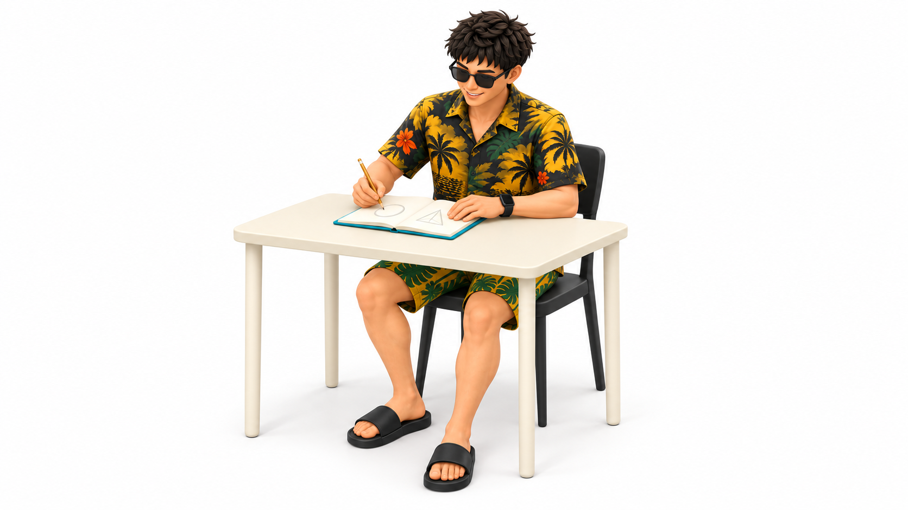
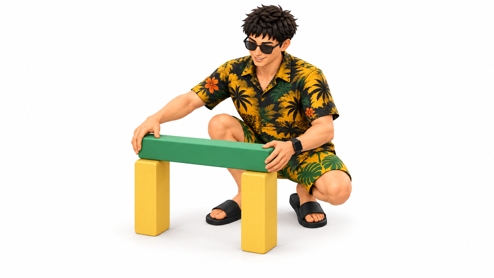
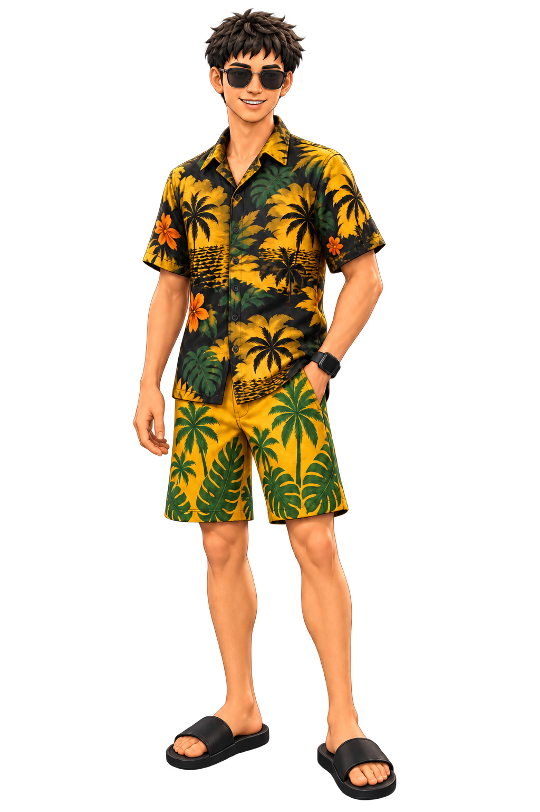
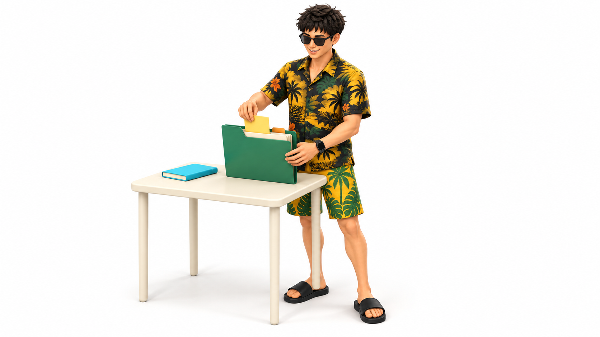

2026-10-01 · 三张独立样图 · 已确认画风
金尘马的文章插图画风
沿用当前 3D 人物，测试白底留白、柔和体块、哑光质感和有限配色在不同场景中的一致性。以下均为二维 PNG；默认采用本轮 3D 人物与画风；旧版独立保留，文章叙事流程未做完整重构。
01 · 写下想法
坐姿、家具和纸张的质感能否协调。

02 · 搭建雏形
蹲姿、手与物件接触、简单结构是否清楚。

03 · 观察悬浮的书
同一画风是否适合少物件的概念场景。
320 px 宽的小图比较
检查缩小后的动作、主要物件和人物识别，服装细节是否过于抢眼。
本轮共同参考


未重新设计服装，纹样允许生成性变化。皮肤保持自然肤色，颜色是材质基色目标；没有建立颜色与概念的固定语义对应。